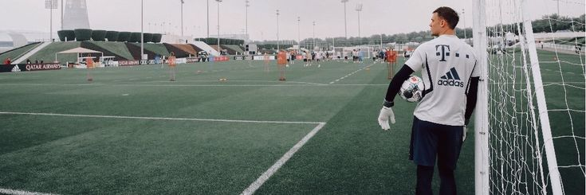
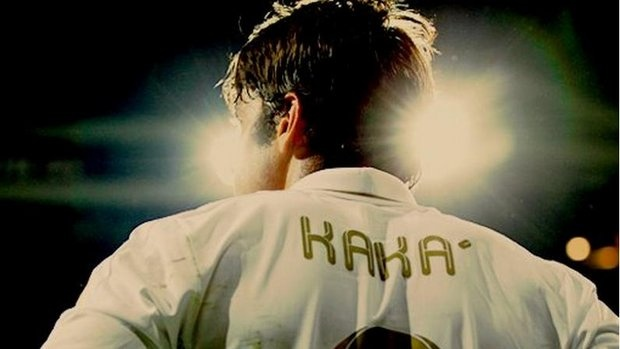

1er tiempo
Lo que el deporte cura
La evidencia científica sobre este punto es amplia y viene de organismos de salud, no solo de sentido común.
OMS
Reduce ansiedad y depresión a cualquier edad
La actividad física regular reduce los síntomas de depresión y ansiedad tanto en adultos como en niños y adolescentes, además de favorecer la salud cerebral general.[1]
Neuroquímica
Libera endorfinas, serotonina y dopamina
Durante y después del ejercicio el cerebro libera sustancias asociadas al bienestar y reduce el cortisol, la hormona del estrés — de ahí la sensación de calma después de entrenar.[2]
Estudio JAMA Pediatrics
Protege a la infancia y la adolescencia
Un estudio con casi dos millones de chicos en Taiwán, seguido durante años, mostró que el ejercicio actúa como factor de protección frente a ansiedad, depresión y TDAH.[3]
Efecto social
Pertenecer a un equipo también cuida
Más allá de la química cerebral, el deporte en grupo suma un factor de conexión social y autoestima que funciona como protección extra frente a los problemas de salud mental.[1]


